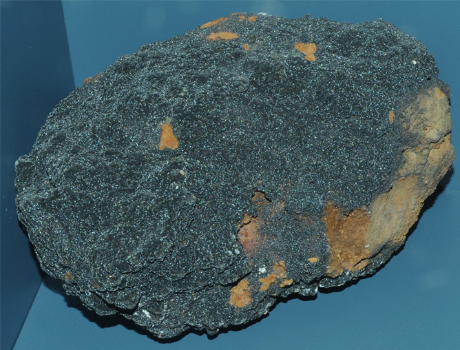

|

| Pb(Cu,Zn)VO4(OH)
This sample of mottramite is displayed in the Smithsonian Museum of Natural History. Mottramite is a oxide mineral of copper, lead, zinc, and vanadium with the composition Pb(Cu,Zn)VO4(OH). The sample at left is about 25 cm across and is from Shattuck shaft, Bisbee, Arizona.
Mottramite is often characterized by a grass green color.
|